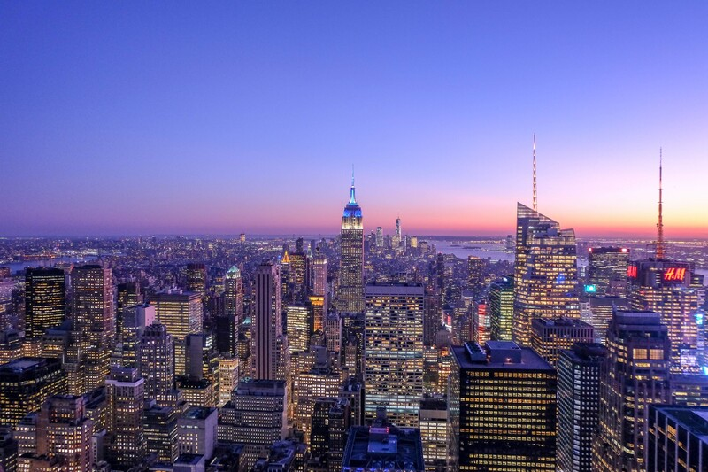
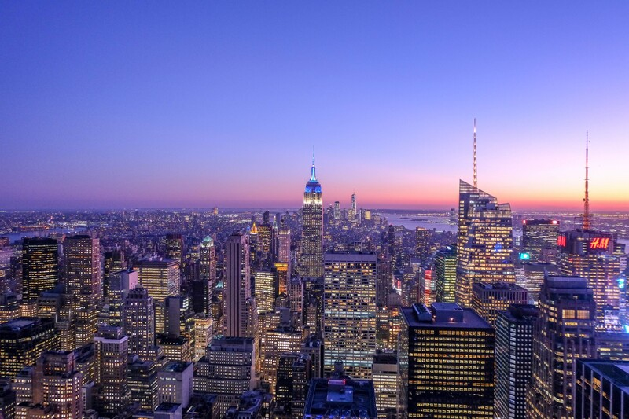

"I need a reliable travel service that can get me to my destination as fast and smoothly as possible in urgent situations."
Age: 28
Work: Medical Sales Representative
Family: Single, no children
Personality
Introvert Extrovert
Thinking Feeling
Sensing Intuition
Goals
- Find the fastest and most efficient travel option during emergencies.
- Ensure comfort and reliability even in stressful travel situations.
- Minimize time spent on bookings and paperwork.
Frustrations
- Limited flight or transportation availability in urgent cases.
- Lengthy booking processes that waste valuable time.
- Poor customer service during high-stress situations.
Motivation
Price Comfort
Comfort Reliability
Reliability Speed
Bio
Alex is a medical sales representative who frequently has to travel on short notice for emergencies at hospitals and clinics. Alex values speed and efficiency over luxury, preferring travel solutions that are quick and reliable. He often feels the pressure of arriving on time to meet clients and deliver crucial medical equipment, so avoiding delays is paramount. Although he’s used to frequent travel, he finds that unexpected emergencies often make planning difficult and stressful.
Favourite Destinations
 
